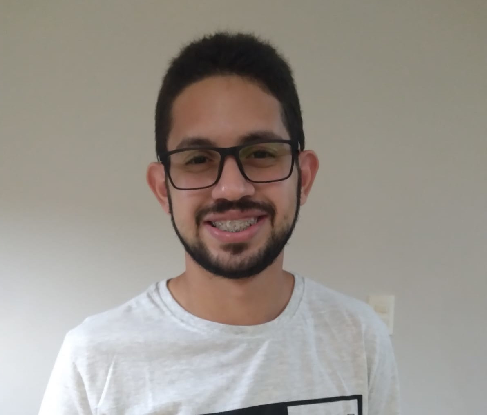

Alan Mateus
Olá, tudo bem? Bem vindo(a) a minha simples página, onde irei explanar alguns conhecimentos a meu respeito.
Sobre mim
- Mostro-me apto para desempenhar qualquer função a mim concedida, demonstrar que sou capaz de realizar com sucesso as tarefas, desenvolvendo meus conhecimentos e os aperfeiçoando cada vez mais.
- Tenho agilidade e habilidades que irão me auxiliar no cumprimento das demanda, além de rapidez no aprendizado a medida do necessário. Busco sempre o aperfeçoamente das minhas técnicas e do trabalho em equipe, além de comunicação em geral.
Formação e trabalho
- => Ensino Superior em andamento [6º período] | UNIFACOL - Centro Universitário FACOL | Sistemas de Informação
- => Ensino Técnico incompleto | ETE Limoeiro – Escola Técnica Estadual | Análise e Desenvolvimento de Sistemas
- => Ensino Médio Completo | 3º Milênio Colégio e Curso
- => Atuando como desenvolvedor junior | Marques Consult, consultoria e processamento de dados na área da saúde
Ferramentas
- Programação:
- Gerenciadores de banco de dados: